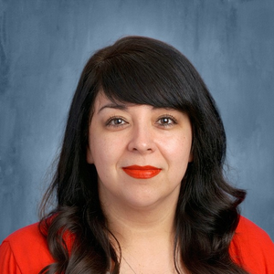
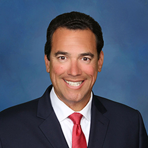
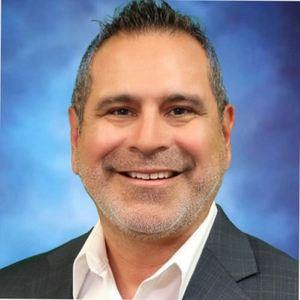

Highest priority
Recovery 5/5 and 4/5
Ashley AouateDirector, Information Security & NetworkingFresno Unified School District · 70,000 students
Recovery 5/5Fleet~100k devices, Windows-leaning laptopsMDMAbsolute Secure Endpoint · Vendor case study
Craig ReidDirector of TechnologyMoline-Coal Valley CUSD 40 · 7,200 students
Recovery 5/5FleetChromebook (Dell 3110, Acer 315, Acer Tab 510) + iPadsMDMFileWave (Win/Mac + iOS/Android/tvOS) · PO — strong

Annette TrujilloDirector of TechnologySoledad Unified School District · 4,732 students
Recovery 4/5FleetiPadMDMMosyle + Meraki iPad MDM · PO — strong
Dr. Mary Erica AcebuDirector of Technology, Data, and AssessmentOakley Union Elementary SD · 5,225 students
Recovery 4/5FleetChromebookMDMNot found · PO (fleet only)

Rich MontgomeryDeputy SuperintendentWestminster School District · 7,600 students
Recovery 4/5FleetApple-only (iPad, iPad Pro/Air, iMac, MacBook Pro M5)MDMJamf Pro iOS + macOS · PO — very strong

Ruben MontoyaDirector of TechnologyLitchfield Elementary SD 79 · 10,755 students
Recovery 4/5FleetUnknownMDMUnknown · No data
Scott QuickChief Technology OfficerSierra Sands Unified School District · 4,900 students
Recovery 4/5FleetMixed: iPad + Acer ChromebookMDMMosyle OneK12 + Google Admin · PO — very strong
Also worth a conversation
Recovery 3/5
Anh PhamSenior Manager of Innovative Learning and TechnologyMilpitas Unified School District · 10,200 students
Recovery 3/5FleetChromebookMDMUnknown · District news only
Bruce LambertDirector of TechnologyBenicia Unified · 4,300 students
Recovery 3/5FleetiPad primary + few Lenovo ChromebooksMDMCisco Meraki Systems Manager · PO — very strong
David Brian HaysDirector of InnovationSalinas City Elementary SD · 8,500 students
Recovery 3/5FleetChromebookMDMIncident IQ · PO — strong
Edward HiltonChief Technology OfficerTahoe Truckee Unified School District · 4,200 students
Recovery 3/5FleetChromebook 1:1, gr 6–12MDMUnknown · PO stale (2021)